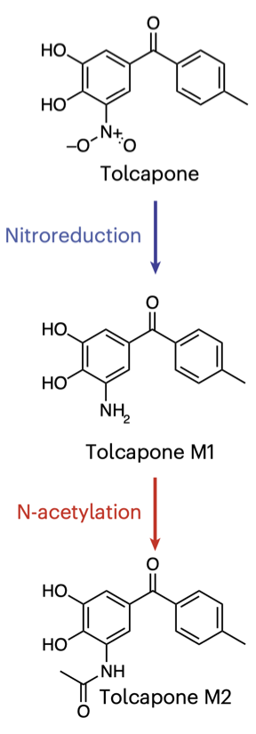
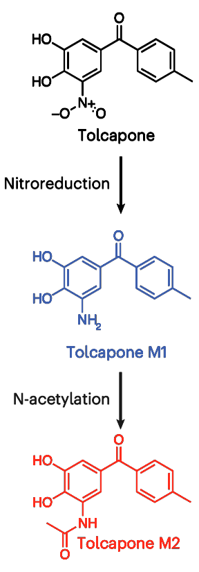

Converting a heatmap into a line plot with ggplot2 in R to improve interpretability (CC416)
In this livestream, Pat recreates and then refactors a barplot and a set of heatmaps with a graphical legend from a paper published in the journal Nature Microbiology. He created the figure using R, readxl, dplyr, ggplot2, ggtext, showtext, patchwork, and other tools from the tidyverse. The functions he used from these packages included aes, arrange, coord_cartesian, download.file, dup_axis, element_blank, element_line, element_markdown, element_rect, element_text, expansion, facet_wrap, factor, filter, filter_out, first, font_add_google, function, geom_col, geom_hline, geom_line, geom_richtext, geom_tile, geom_vline, ggplot, ggsave, labeller, labs, library, margin, mean, mutate, names, paste, pivot_longer, pull, read_excel, rename, rep, rev, scale_color_manual, scale_fill_gradient, scale_x_continuous, scale_x_discrete, scale_y_continuous, sd, seq, showtext_auto, showtext_opts, str_remove, str_replace, str_replace_all, summarize, theme, tibble, and unit. The original Nature Microbiology article can be found here. His critique of the visualization can be seen here. If you have a figure that you would like to see me discuss in a future newsletter and episode of Code Club, email me at pat@riffomonas.org!


library(tidyverse)
library(showtext)
library(readxl)
library(ggtext)
library(patchwork)
font_add_google("Nunito", "nunito")
showtext_opts(dpi = 300)
showtext_auto()
url <- "https://static-content.springer.com/esm/art%3A10.1038%2Fs41564-026-02299-2/MediaObjects/41564_2026_2299_MOESM4_ESM.xlsx"
download.file(url, "figure1.xlsx")
ic50 <- read_excel("figure1.xlsx", range = "A21:B36", sheet = "B",
col_names = c("species_name", "ic50")) %>%
mutate(species_name = str_replace_all(species_name, " ", " "),
species_name = str_remove(species_name, " K12"),
species_name = str_remove(species_name, " V583"),
species_name = str_remove(species_name, " $"),
ic50 = str_remove(ic50, ">") %>% as.numeric(),
species_name = str_replace(species_name, "enterica",
"enterica Typhimurium")
) %>%
filter_out(species_name == "Bacillus subtilis")
# filter(species != "Bacillus subtilis")
species_order <- ic50 %>%
mutate(resistant = ic50 >= 200) %>%
arrange(resistant, species_name) %>%
pull(species_name)
pretty_species_names <- c(
"<span style = 'color:#EB8E24'>*Anaerococcus hydrogenalis*</span>",
"<span style = 'color:#EB8E24'>*Anaerostipes* spp.</span>",
"<span style = 'color:#EB8E24'>*Bacteroides caccae*</span>",
"<span style = 'color:#EB8E24'>*Bacteroides fragilis*</span>",
"<span style = 'color:#EB8E24'>*Bacteroides ovatus*</span>",
"<span style = 'color:#EB8E24'>*Bacteroides thetaiotaomicron*</span>",
"<span style = 'color:#EB8E24'>*Bacteroides uniformis*</span>",
"<span style = 'color:#EB8E24'>*Blautia luti*</span>",
"<span style = 'color:#EB8E24'>*Clostridium difficile*</span>",
"<span style = 'color:#EB8E24'>*Clostridium ramosum*</span>",
"<span style = 'color:#EB8E24'>*Parabacteroides distasonis*</span>",
"<span style = 'color:black'>*Bifidobacterium adolescentis*</span>",
"<span style = 'color:black'>*Enterococcus faecalis*</span>",
"<span style = 'color:black'>*Escherichia coli*</span>",
"<span style = 'color:black'>*Salmonella enterica* Typhimurium</span>")
names(pretty_species_names) <- species_order
metabolite_data <- read_excel("figure1.xlsx",
range = "A1:AU16", sheet = "B") %>%
rename("compound" = "Compound (µM)", "time" = "Time (m)") %>%
pivot_longer(cols = -c(compound, time),
names_to = "species_name", values_to = "concentration") %>%
mutate(species_number = rep(1:(n()/3), each = 3)) %>%
mutate(species_name = first(species_name),
replicate = 1:3, .by = species_number) %>%
summarize(mean_conc = mean(concentration), sd_conc = sd(concentration),
.by = c(compound, time, species_name)) %>%
mutate(species_name = str_replace_all(species_name, " ", " "),
species_name = str_remove(species_name, " Δtdk"),
species_name = str_remove(species_name, " 120"),
species_name = str_remove(species_name, " K12"),
species_name = str_remove(species_name, " V583"),
species_name = str_remove(species_name, " LT2"))
ic50_plot <- ic50 %>%
mutate(species_name = factor(species_name, levels = species_order)) %>%
ggplot(aes(x = species_name, y = ic50)) +
geom_col(width = 0.6, fill = "#7F7F7F", color = "black", linewidth = 0.1) +
scale_y_continuous(limits = c(0, 200), expand = c(0, 0)) +
labs(x = NULL, y = "Tolcapone<br>IC50 (μM)") +
scale_x_discrete(
breaks = species_order,
labels = pretty_species_names,
expand = expansion(add = 0.5)
) +
theme(
text = element_text(family = "nunito", color = "black"),
axis.text.x = element_markdown(angle = 90, color = "black",
vjust = 0.5, hjust = 1, size = 6),
axis.text.y = element_text(color = "black", size = 5.5),
axis.title.y = element_markdown(color = "black", size = 6),
panel.grid = element_blank(),
panel.background = element_blank(),
panel.border = element_rect(color = "black", linewidth = 0.2),
axis.ticks = element_line(linewidth = 0.2)
)
plot_metabolite_data <- function(compound_name, fill_color, legend_breaks){
metabolite_data %>%
filter(compound == compound_name) %>%
mutate(species_name = factor(species_name, levels = species_order),
time = factor(time, levels = rev(c(10, 60, 180, 360, 720)))) %>%
ggplot(aes(x = species_name, y = time, fill = mean_conc)) +
geom_tile() +
scale_x_discrete(
breaks = species_order,
labels = pretty_species_names
) +
scale_fill_gradient(
name = paste(compound_name, "(μM)"),
low = "white", high = fill_color,
breaks = legend_breaks) +
coord_cartesian(expand = FALSE) +
labs(x = NULL, y = "Time (min)") +
theme(
text = element_text(family = "nunito", color = "black"),
axis.text.x = element_markdown(angle = 90, color = "black",
vjust = 0.5, hjust = 1, size = 6),
axis.text.y = element_text(color = "black", size = 5.5),
axis.title.y = element_markdown(color = "black", size = 6),
panel.grid = element_blank(),
panel.background = element_blank(),
panel.border = element_rect(color = "black", linewidth = 0.2),
axis.ticks = element_line(linewidth = 0.2),
legend.title.position = "right",
legend.title = element_markdown(angle = -90, hjust = 0.5, size = 5.5,
margin = margin(l = 3)),
legend.frame = element_rect(color = "black", linewidth = 0.1),
legend.ticks = element_line(color = "black", linewidth = 0.1)
)
}
tolcapone <- plot_metabolite_data("Tolcapone", "#171718", c(0, 5, 10))
tolcapone_m1 <- plot_metabolite_data("Tolcapone M1", "#485CA6",
c(0, 5, 10, 15))
tolcapone_m2 <- plot_metabolite_data("Tolcapone M2", "#DF3C2E",
seq(0, 0.8, 0.2))
flow_diagram <- ggplot(data = tibble(x = 1, y = 1,
label = "<img src = 'compounds_original.png' width = 60 />"),
aes(x = x, y = y, label = label)) +
geom_richtext(label.padding = unit(0, "pt"), label.margin = unit(0, "pt"),
label.color = NA, fill = NA) +
theme(axis.title = element_blank(),
axis.text = element_blank(),
axis.ticks = element_blank(),
panel.grid = element_blank(),
panel.background = element_blank())
layout <- "
#B
AC
AD
AE
"
flow_diagram + theme(plot.margin = margin()) +
ic50_plot + theme(plot.margin = margin(t = 12, b = 8)) +
tolcapone + theme(plot.margin = margin(t = 0, b = 5)) +
tolcapone_m1 + theme(plot.margin = margin(t = 0, b = 5)) +
tolcapone_m2 + theme(plot.margin = margin(t = 0, b = 5)) +
plot_layout(axes = "collect_x", design = layout,
heights = c(0.2, 0.4, 0.4, 0.4),
widths = c(0.3, 0.7)) +
plot_annotation(theme = theme(plot.margin = margin())) &
theme(
legend.text = element_text(size = 5, margin = margin(l = 2)),
legend.key.height = unit(10, "pt"),
legend.key.width = unit(6, "pt"),
legend.ticks.length = unit(1, "pt"),
legend.background = element_blank(),
legend.box.spacing = unit(0, "pt")
)
ggsave("heatmap.png", width = 3.75, height = 4.39)
pretty_species_names <- str_remove(pretty_species_names, " Typhimurium")
metabolite_data %>%
# filter_out(compound == "Tolcapone M2") %>%
mutate(species_name = factor(species_name, levels = species_order)) %>%
ggplot(aes(x = time, y = mean_conc, color = compound)) +
geom_hline(yintercept = 0, color = "black", linewidth = 0.2) +
geom_vline(xintercept = 0, color = "black", linewidth = 0.2) +
geom_line(show.legend = FALSE) +
facet_wrap(.~species_name, ncol = 1, strip.position = "left",
labeller = labeller(species_name = pretty_species_names)) +
geom_richtext(
data = tibble(x = -1130, y = 1,
label = "<img src = 'compounds_modified.png' width = 70 />",
species_name = factor("Blautia luti")),
inherit.aes = FALSE,
aes(x = x, y = y, label = label),
label.padding = unit(0, "pt"),
label.margin = margin(),
label.color = "NA") +
labs(
x = "Time (min)",
y = NULL
) +
coord_cartesian(xlim = c(0, NA), expand = FALSE, clip = "off") +
scale_y_continuous(sec.axis = dup_axis(name = "Concentration (μM)",
breaks = NULL, labels = NULL)) +
scale_x_continuous() +
scale_color_manual(
breaks = c("Tolcapone", "Tolcapone M1", "Tolcapone M2"),
values = c("#171718", "#485CA6", "#DF3C2E")) +
theme(
text = element_text(family = "nunito"),
panel.grid = element_blank(),
panel.background = element_blank(),
strip.placement = "outside",
strip.text.y.left = element_markdown(angle = 0, size = 7, hjust = 0,
margin = margin()),
strip.background = element_blank(),
axis.title.y.right = element_markdown(size = 8),
axis.title.x = element_text(size = 8),
axis.text.x = element_text(color = "black", size = 7),
axis.text.y = element_text(color = "black", size = 4),
axis.ticks.x = element_line(linewidth = 0.2),
axis.ticks.y = element_blank(),
plot.margin = margin(l = 70, r = 1, t = 1, b = 1)
)
ggsave("line_plot.png", width = 3.75, height = 4.39)